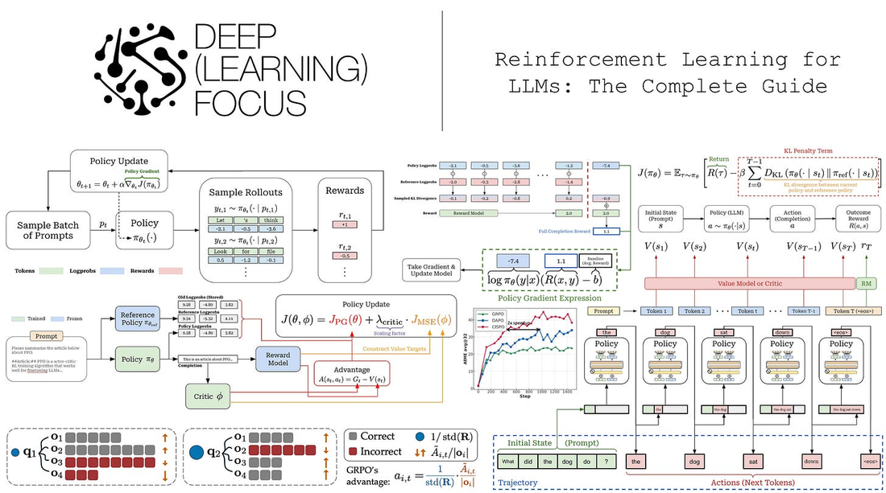
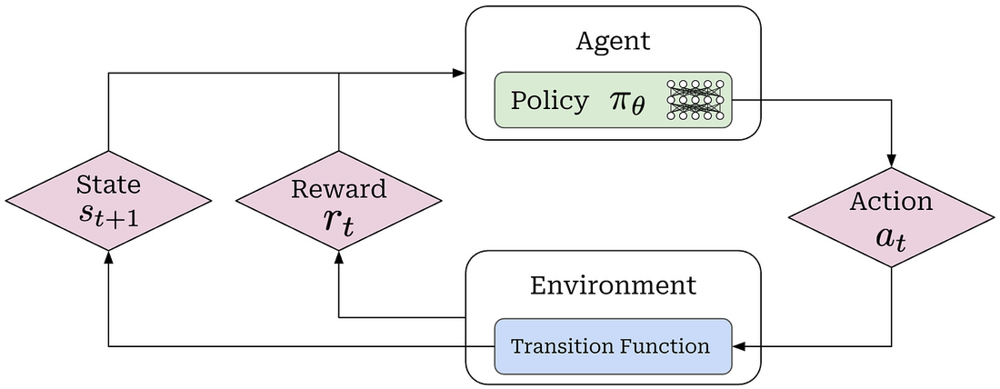
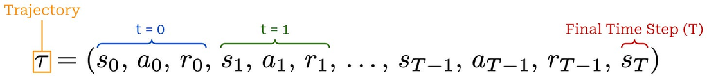
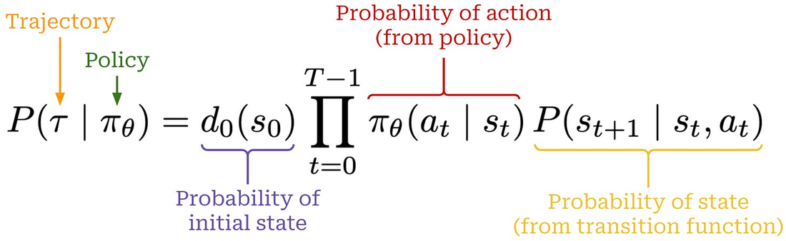
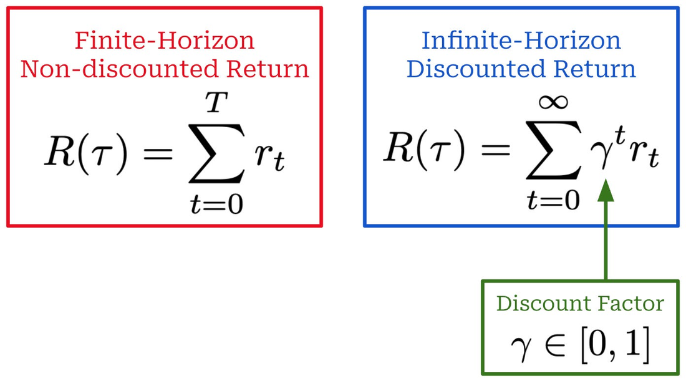
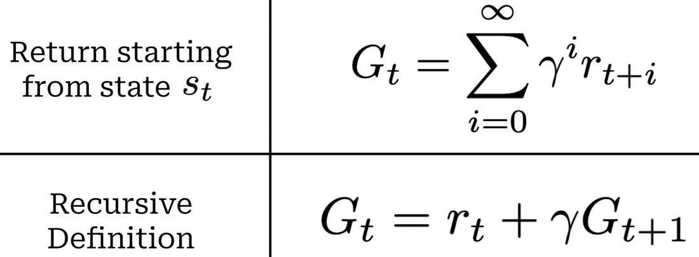
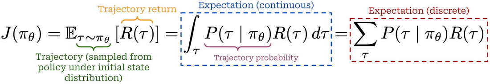
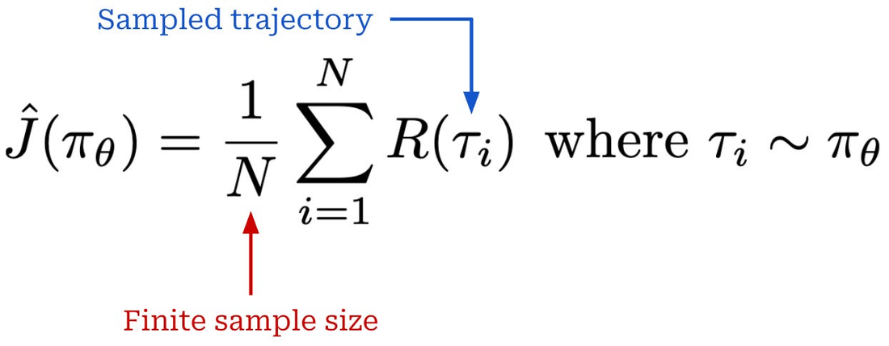

RL在LLM研究史上一直扮演关键角色：造出早期指令跟随模型、推进对齐与安全、让LLM解复杂推理题。但RL仍是AI研究里演进最快的领域之一。这篇单篇指南从第一性原理爬升到RL研究前沿：覆盖RL基础、当前用于训练LLM的策略梯度算法的完整演化、以及几个新兴研究领域。
RL训练里我们有一个agent在某种环境 里迭代取动作。每一步用一个时间步t标记，t时刻的动作记为a(t)。动作由策略（可用作agent的大脑）预测，参数为 θ（训练LLM时策略就是LLM本身）。策略可确定或随机，对LLM我们假设随机：随机策略 π(θ) 输出可能动作集上的概率分布、动作a(t) 从这里采样。

策略输出动作后，环境的状态按transition function（环境的一部分）更新，状态记为s(t)。动作后环境给奖励r(t)（可正可负可零）刻画状态/动作的期望度。RL本质是试错：agent在环境中行动，训练过程通过奖励强化（正或负）被观察行为：故名「reinforcement」learning。
从初始状态s(0) 开始，agent重复：采样动作 → 转到新状态 → 获奖励，直到终态s(T)（因是终态或达最大步数）。这些步骤的序列构成trajectory（轨迹）。RL反复从agent采样轨迹，让它探索状态-动作空间、最终发现高奖励行为模式。
轨迹概率 = 动作分布 π(θ)(a(t)|s(t)) 和状态转移P(s(t+1)|a(t),s(t)) 的链式乘积。累计回报（return）= 轨迹所有r(t) 的和，可带折扣因子 γ（∈[0,1]）指数衰减未来奖励、鼓励模型尽早获得奖励。对LLM post-training常有限T且 γ=1（主要用轨迹/完成级别的奖励而非逐状态）。
RL目标：最大化当前策略的期望回报。实践中枚举所有轨迹不可行，用Monte Carlo估计（对随机采样轨迹的回报取均值）。
价值函数V(s)：从状态s按当前策略 π(θ) 行动得到的期望累计回报。动作价值 / Q函数Q(s,a)：从s取动作a后按策略的期望累计回报。优势函数A(s,a)=Q(s,a)-V(s)：动作a相对策略在当前状态s的期望表现的相对优劣。优势为正 = 取a后期望回报比该状态的期望高，反之亦然。


直觉：RL里我们不总需要绝对描述一个动作多好，而只需它比其它平均好多少：这就是优势函数。价值、动作价值、优势函数作为期望通常无法精确算，需用当前策略采样的真实轨迹信息估计。观测回报G(t) 是Q(s(t),a(t)) 的Monte Carlo估计；价值函数V(s(t)) 需用OPE或critic估计。
为LLM制定RL：LLM自回归生成token。一个常见公式是bandit（完成级）：整段completion视为一个动作、获得单一outcome reward（由奖励模型评分）。替代是token级MDP：每token是一个状态/动作。两种都是常用设定（outcome-reward因简单常用），RL目标常用带KL正则的形式。
KL散度：RL的目标是最大化期望回报，但为使模型不偏离初始行为过远（维持流畅度/语义），在reward上加KL惩罚：鼓励新策略接近某参照策略。KL正则策略通常是参照模型（RL开始前的checkpoint）或旧策略（采样数据的策略）。KL惩罚对生成模型尤其重要，防止过度优化单一奖励导致的模式坍塌。
重要性采样：评估策略 π(θ) 的目标时用旧策略 π_old采样的rollout，通过重要性比 π(θ)(a|s)/π_old(a|s) 校正概率差异。这是PPO/GRPO等几乎所有现代LLM RL算法的基础组块。
策略梯度算法计算RL目标对策略参数的梯度：策略梯度。该梯度有两部分：① 动作a(t) 对数概率对 θ 的梯度（参数空间中增加a(t) 似然的方向）；② 标量 ψ_t（per-action分数）基于动作质量控制梯度的大小和方向：坏动作给大负值降其概率、中性动作给接近0。

VPG推导用两条恒等式：连续的期望定义、log-derivative trick（∇_θ log p_θ(x) = p_θ(x)·∇_θ log p_θ(x)）。结果是动作级对数概率梯度按回报/优势信号加权之和：这一结构出现在本文几乎每个策略梯度算法里。
VPG实现：用完成级bandit公式，整段completion视为一个动作得单一outcome reward。把每token的对数概率求和得sequence级对数概率，乘completion级回报得VPG loss（取负因PyTorch默认梯度下降）。现代算法（PPO/GRPO）很多是loss而非梯度表达式。
降方差：VPG问题①梯度高方差（用相对小的rollout集估计回报）、②对大而不稳定更新无保护。大多数策略梯度算法通过降方差或对更新设trust region解决。
REINFORCE是VPG的Monte Carlo实例：采样rollout、对策略梯度表达式取平均。高方差可通过动作无关的baseline（如平均回报）从采样回报中减去来降。LLM设outcome-reward时baseline = 平均reward。
给策略梯度加baseline不引入偏置（EGLP lemma保证：baseline不依赖动作a(t) 时E[b(s(t))·∇logπ]=0）。注：batch mean若含当前completion，则不是动作无关（每样本贡献到它自己baseline）→ 引入轻微偏置。
RLOO恰好修这个问题：从baseline中排除当前completion自身的reward，保留动作无关性质。之后看到GRPO也用这思路（组内多completion对比）。
REINFORCE的Monte Carlo高方差导致训练不稳。用更有信息量的baseline：价值函数V(s(t))：得到优势估计A(s(t),a(t))=G(t)-V(s(t))。这自然引出actor-critic框架：同时训练策略（actor）和值模型（critic）。critic用LLM backbone + 标量value head，预测每个token位置的期望未来回报。价值函数是on-policy的（依赖策略当前参数）须持续更新，通常用预测值与观测回报的回归损失训练。

TRPO（PPO前身）：把目标设成带硬约束的surrogate objective（期望KL发散< δ），理论上单调改进策略。但约束目标难优化（需二阶近似、共轭梯度、线搜索）。
PPO是更简单的替代：去掉KL硬约束、保留近似目标，但引入clipping惩罚把策略比限制在 [1-ε, 1+ε]。PPO目标 = 最小(clipped, unclipped)：对未裁剪目标是悲观下界。Clipping只在目标会改进过于激进时生效（单向），防止策略比把目标无限推高，鼓励保守更新。
PPO里的多个策略：旧策略 π_old（生成当前batch rollout，重要性比用它）频繁刷新；参照策略 π_ref（RL全程冻结、KL正则用）。二者协同：重要性比校正旧rollout与当前策略的不匹配、相对 π_ref的KL抑制过度漂移。
PPO实现采用token级MDP：每token单独计算return和advantage。关键组件：① 采样KL惩罚（rollout策略vs参照模型）直接从per-token reward减去，rollout时算一次、多次PPO update中保持固定；② 学到critic算advantage并MSE训练；③ 策略比相对old model、同rollout做多次更新（num_ppo_epochs）；④ clipped PPO loss；⑤ batch聚合方式对性能有不可忽视影响。数值技巧：用log概率而非原始概率比。
GAE（广义优势估计）：上述简单优势=return减预测价值。实践中大多用GAE。基于TD residual的单步优势（V(s(t)) vs r(t)+V(s(t+1))）偏差高。GAE用所有N步优势估计的指数加权组合，权重 λ∈[0,1] 控偏差-方差权衡（常用 λ=0.95；训练不稳时降 λ 得低方差更新）。

RL内存开销：PPO训策略 + critic两个模型，还要跑参照策略和奖励模型：最多管理4个模型、其中2个在训练。半精度推理每1B参数约2GB（Qwen-3-32B全上下文131K会从 ~70GB涨到 ~400GB）；训练每1B参数约16GB（含优化器状态和梯度）。backprop需cache前向激活、反向梯度、Adam梯度历史：可到推理的12× 内存。GRPO因不训critic（只训一个模型）大幅省内存。
PPO实际缺点：需训值模型（critic）增加内存、计算、复杂度。GRPO提出更简单的优势估计：为每个prompt采样多个completion（一组），用这些completion的reward构造baseline：组内相对优势。

优势估计：completion i的优势 = (r(i) - 组平均reward) / 组reward标准差。这与RLOO类似均为免值函数、对比同prompt的多completion；Dr.GRPO变体可证与RLOO的优势估计差常数缩放。因优势完全从组内reward估计，每prompt常需采样较多样本（PPO/REINFORCE可1样本，GRPO需多样本稳梯度）。
Surrogate loss：GRPO用与PPO几乎相同的surrogate loss（同重要性比、PPO式clipping、多update）。区别：KL罚直接进（可微）loss而非reward：GRPO优化中重算KL、梯度可流经它；PPO是在reward里采样KL、detach保持固定。
内存：GRPO不训critic（只训一个模型vs PPO两个），省计算并大幅省内存：消除一个可训练模型比移除只推理的模型（reward/ref）影响大得多。
GRPO实现：每prompt采样G个completion，组内reward归一化（(r-mean)/std）得advantage，token级objective广播sequence优势到所有token，做多次GRPO update。也支持process reward（按组内所有process reward归一化、每token优势=后续步骤reward-to-go）。
DeepSeek-R1后GRPO爆火，但复现训练管线不平凡，催生大量修改。
GSPO（序列级比）：GRPO目标有misalignment：advantage在sequence级、策略比/loss在token级。per-token比在长序列/大稀疏MoE中高方差、单token可主导loss。GSPO用序列级重要性比（log几何均值、按序列长归一化），稳定训练、提升采样效率和性能，被Qwen3采用。
DAPO（训练配方）：解决vanilla GRPO的熵坍塌（高概率token被强调、低概率探索token被罚）。decoupled clip用 [1-ε下限, 1+ε上限]（ε下限0.2、ε上限0.28）：提高 ε上限 防熵坍塌。动态采样过滤全同reward的prompt组、继续采样到batch满。token级loss平均防序列长偏置；overlong filtering去掉被截断响应的不稳定reward、加长度惩罚。
Dr. GRPO：指出GRPO两偏置。① response级长度偏置：GRPO按序列token数归一化loss，按固定常数MAX_TOKENS归一化可去掉长度影响；② 问题级难度偏置：advantage分母标准差让太易/太难问题的advantage过大，去掉标准差项修复。提升稳定性、token效率。
TIS（截断重要性采样）：现代RL用分离引擎（vLLM/SGLang采样rollout + FSDP/DeepSpeed算更新），引擎间token概率不一致无法简单标准化。TIS在策略梯度里加引擎间重要性比校正mismatch。与PPO比的重要区别：直接截断比（min(r(t),ρ) 单侧上界）而非两段最小。token级TIS常用、但token级比引入偏置，sequence级方差高：bias-variance权衡。被verl、OpenInstruct采用。
CISPO：注意力里重要的「fork」token（如「aha」「wait」）初始概率低、首个更新后概率暴涨 → PPO会clip掉它们从后续off-policy更新消失。MiniMax-M1每batch 16次更新，关键token被遮掉严重伤效率。CISPO用REINFORCE式loss + stop-gradient到clipped比：比作为权重控token贡献、而非clip后置零：所有token都贡献梯度。
Online vs Offline：在线（PPO/GRPO持续生成on-policy completion）vs离线（DPO固定数据集）。在线更难编排，但研究一致显示on-policy数据对性能有积极影响：尤其在困难设定里高奖励响应初始不易出现时需要主动探索。semi-online（周期刷新on-policy样本）可恢复部分收益；异步基础设施须处理部分off-policy的stale数据。新鲜on-policy数据是RL结果好的关键。

Continual Learning：历史上面临灾难性遗忘。但on-policy RL天然对遗忘鲁棒：训练用模型自身采样的on-policy data，更新贴近当前模型已合理的行为，策略分布偏移小（KL测），与遗忘强相关。SFT学新任务好但渐进忘旧。Nemotron-Cascade用序列RL管线。
Rubric-based rewards：可验证领域（math/code用确定性verifier）适合RL，但开放任务（创意写作/科研）不可验证。rubric奖励：先派生出prompt特定的质量标准checklist，用LLM judge逐条评估并聚合。对开放任务提供informative、可控的奖励信号、降reward hacking风险。
RL Scaling Laws：RL性能确实随compute可预测扩展，但比预训练messy：用下游reward/accuracy度量、应用特定、依赖评估设置；RL compute分rollout生成和策略更新两半难一致测。有用发现：早期阶段可外推到更大规模预测表现、测试配方可扩展性；除增训练步数还有多方式扩展（大batch、data reuse、采样更多completion/prompt）。
Agentic RL：单轮任务vs agentic系统（长时间推理、调工具、交互外部环境）。agentic rollout含多轮生成和环境交互（tool calls、observations、rewards、状态变化）：需更复杂基础设施。设计模式：模块化工具/环境接口、mask目标只含agent生成token（非环境输出）、支持中间process rewards改进长轨迹credit assignment、探索环境感知的advantage归一化、异步基础设施处理大幅变化完成时间、扩展环境编排支撑数千并发环境无中心瓶颈。
策略梯度：VPG提供几乎所有算法的核心思想：增好动作概率、减坏动作，数学上 = log概率梯度 × 学习信号。现代算法更复杂但都基于此结构。
REINFORCE具体实例化VPG：对期望取Monte Carlo（采样rollout平均）。高方差可用动作无关baseline降（RLOO排除当前样本造prompt特定baseline）。
PPO = 强大的优势估计 + 保守更新：actor-critic用学到值模型估计价值函数构造优势 + 重要性比和clipping允许多次更新而防破坏性更新。价值函数、重要性采样、优势估计、KL发散在此汇聚。
GRPO去critic简化PPO：免训值模型、采样多completion组内比较：更简单轻量的优化过程，牺牲采样rollout的计算换复杂度，因reasoning模型大规模RL训练而极流行。
Beyond vanilla GRPO：DAPO、Dr.GRPO、GSPO、TIS、CISPO不重造轮子，而是精修看似小的细节（loss聚合方式、reward归一化、batch组成、clip应用、per-token/per-sequence比、引擎mismatch处理）：这些对scale重要。
Looking forward：RL仍充满关于数据、奖励、缩放、持续学习、长视界推理、agents的开放问题。本文提供贡献这一前沿所需的概念基础。
参考：https://cameronrwolfe.substack.com/p/llm-rl